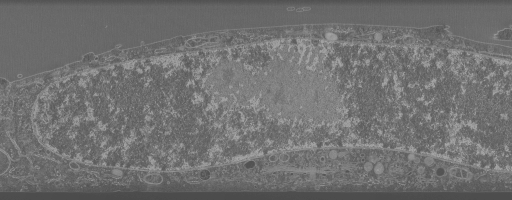

… by defining the processing operations over cells.
imglib2
jupyter
notebook
cache
lazy
cell
Author
Stephan Saalfeld
Published
October 17, 2024
In this notebook, we will learn how to use the ImgLib2 cache library to implement lazy processing workflows at the level of cells (blocks, chunks, boxes, hyperrectangles, Intervals). To make things a bit easier, we will compile and install a small helper library with useful functions. You can find it in /i2k2024-lazy-spark. Please build it:
mvn clean package
Great! We can now add this as a dependency, together with everything else that we will use:
SLF4J: Failed to load class "org.slf4j.impl.StaticLoggerBinder".
SLF4J: Defaulting to no-operation (NOP) logger implementation
SLF4J: See http://www.slf4j.org/codes.html#StaticLoggerBinder for further details.
For processing, we will use ImgLib2 cached cell loaders. This is best done with a shared factory:
Code
/* create a cached image factory with reasonable default values */finalvar cacheFactory =newReadOnlyCachedCellImgFactory(newReadOnlyCachedCellImgOptions().volatileAccesses(true)//< use volatile accesses for display.cellDimensions(256,256,32));//< standard block size for this example
Now some parameters:
Code
int scaleIndex =3;finaldouble scale =1.0/Math.pow(2, scaleIndex);finalint blockRadius =(int)Math.round(1023* scale);
Let’s create our first lazy processed image:
Code
/* Use the ImageJ CLAHE plugin in an op to produce CLAHE enhanced cells */finalvar clahe =new ImageJStackOp<>( Views.extendMirrorSingle(img), fp -> Flat.getFastInstance().run(newImagePlus("", fp), blockRadius,256,3.0f,null,false), blockRadius,0,65535);/* create a lazy-generating cached cell image using the clahe op as a cell loader */finalvar clahed = cacheFactory.create( img.dimensionsAsLongArray(),//< the size of the result img.randomAccess().get().createVariable(),//< the type that is used to generate the result pixels clahe::accept);//< the consumer that creates each cell
Let’s look at clahed:
Code
var clahedCrop = clahed.view().interval( Intervals.createMinSize( clahed.dimension(2)/2,0, clahed.dimension(2)/2,512, clahed.dimension(1),1));clahedCrop;

Code
/* Use the ImageJ plugin local contrast normalization in an op to produce contrast enhanced cells */finalvar lcn =new ImageJStackOp<UnsignedShortType>( Views.extendMirrorSingle(img), fp -> NormalizeLocalContrast.run( fp, blockRadius, blockRadius,3f,true,true), blockRadius,0,65535);/* create a lazy-generating cached cell image using the lcn op as a cell loader */finalvar lcned = cacheFactory.create( img.dimensionsAsLongArray(),//< the size of the result img.randomAccess().get().createVariable(),//< the type that is used to generate the result pixels lcn::accept);//< the consumer that creates each cell
Code
var lcnedCrop = lcned.view().interval(clahedCrop);lcnedCrop;
Code
/* Use the new ImageJ plugin contrast limited local contrast normalization in an op to produce contrast enhanced cells */finalvar cllcn =new ImageJStackOp<UnsignedShortType>( Views.extendMirrorSingle(img), fp ->newCLLCN(fp).run( blockRadius, blockRadius,3f,10,0.5f,true,true,true), blockRadius,0,65535);/* create a lazy-generating cached cell image using the cllcn op as a cell loader */finalvar cllcned = cacheFactory.create( img.dimensionsAsLongArray(),//< the size of the result img.randomAccess().get().createVariable(),//< the type that is used to generate the result pixels cllcn::accept);//< the consumer that creates each cell
Code
var cllcnedCrop = cllcned.view().interval(clahedCrop);cllcnedCrop;
Code
/* Invert and float convert the image, then use the CLIJ2 DoG filter */finalvar inverted = Converters.convert(img,(a, b)-> b.setReal(0xffff- a.getRealDouble()),newFloatType());finalvar clij2Filter =new CLIJ2FilterOp<FloatType, FloatType>( Views.extendMirrorSingle(inverted),20,20,20); clij2Filter.setFilter((a, b)-> clij2Filter.getClij2().differenceOfGaussian(a, b,4,4,4,3,3,3));finalvar clij2filtered = cacheFactory.create( img.dimensionsAsLongArray(),//< the size of the resultnewFloatType(),//< the type that is used to generate the result pixels clij2Filter::accept,//< the consumer that creates each cellnewReadOnlyCachedCellImgOptions().cellDimensions(64,64,64));
Code
var clij2filteredCrop = clij2filtered.view().interval(clahedCrop);clij2filteredCrop;
All this felt a bit non-interactive, so let’s see how it looks in BigDataViewer:
/* convert to a signed type that can capture the gradients */finalvar imgDoubles = Converters.convert( clahed,(a, b)-> b.setReal(a.getRealDouble()),newDoubleType());/* gradients X */finalvar gradientX = Functions.centerGradientRAI(imgDoubles,0);/* gradients Y */finalvar gradientY = Functions.centerGradientRAI(imgDoubles,1);/* gradients Z */finalvar gradientZ = Functions.centerGradientRAI(imgDoubles,2);/* cache results */var cachedGradientX = Caches.cache(gradientX,16,16,16);var cachedGradientY = Caches.cache(gradientY,16,16,16);var cachedGradientZ = Caches.cache(gradientZ,16,16,16);bdv = BdvFunctions.show( VolatileViews.wrapAsVolatile(cachedGradientX), n5Dataset +" CLAHE gradient x",BdvOptions.options().addTo(bdv));bdv.setColor(newARGBType(0xffff0000));bdv.setDisplayRange(-4000,4000);bdv = BdvFunctions.show( VolatileViews.wrapAsVolatile(cachedGradientY), n5Dataset +" CLAHE gradient y", BdvOptions.options().addTo(bdv));bdv.setColor(newARGBType(0xff00ff00));bdv.setDisplayRange(-4000,4000);bdv = BdvFunctions.show( VolatileViews.wrapAsVolatile(cachedGradientZ), n5Dataset +" CLAHE gradient z", BdvOptions.options().addTo(bdv));bdv.setColor(newARGBType(0xff0000ff));bdv.setDisplayRange(-4000,4000);
We’ve now interactively inspected the results of our operation, and would like to process the entire dataset and save the output. Since saving requires that the data exists, we can simply save the incomplete lazy-cached result in parallel. This will trigger evaluation where data has not been generated:
Code
finalvar n5OutUrl ="/home/saalfeld/tmp/jrc_hela-2.zarr";finalvar n5OutGroup ="/em/fibsem-uint16/processed/";/* use the same attributes as source */var attributes = n5.getDatasetAttributes(n5Dataset);/* create an N5 factory with reasonable defaults */final N5Factory n5Factory =newN5Factory().zarrDimensionSeparator("/");/* working in parallel helps */finalvar exec =Executors.newFixedThreadPool(12);display("Processing...");finalvar timer =new org.janelia.saalfeldlab.i2k2024.util.Timer();timer.start();try(final N5Writer n5Out = n5Factory.openWriter(n5OutUrl)){ N5Utils.save( cachedGradientX, n5Out, n5OutGroup +"clahe-gradient-x", attributes.getBlockSize(), attributes.getCompression(), exec);display("... x done in "+ timer.stop()+"ms."); timer.start(); N5Utils.save( cachedGradientY, n5Out, n5OutGroup +"clahe-gradient-y", attributes.getBlockSize(), attributes.getCompression(), exec);display("... y done in "+ timer.stop()+"ms."); timer.start(); N5Utils.save( cachedGradientZ, n5Out, n5OutGroup +"clahe-gradient-z", attributes.getBlockSize(), attributes.getCompression(), exec);display("... z done in "+ timer.stop()+"ms."); timer.start();}exec.shutdown();